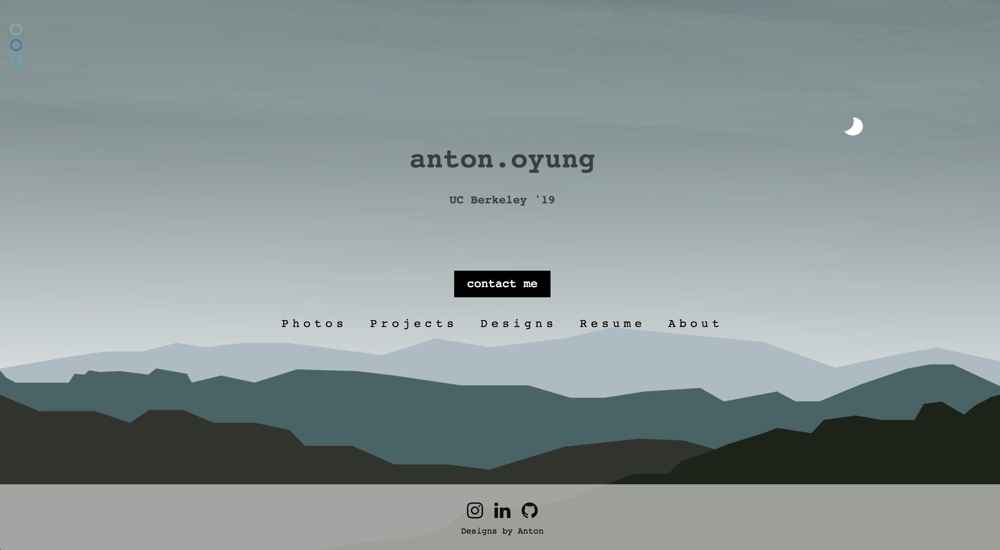
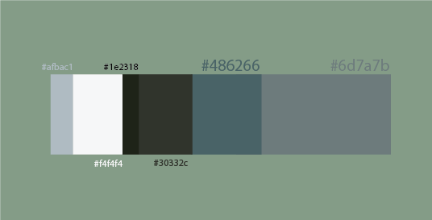
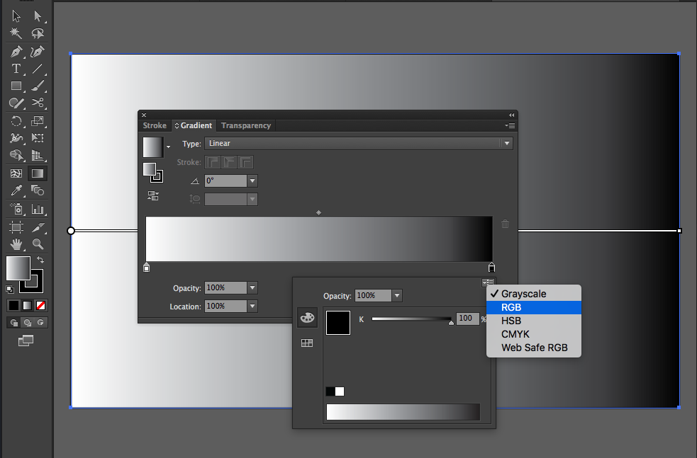
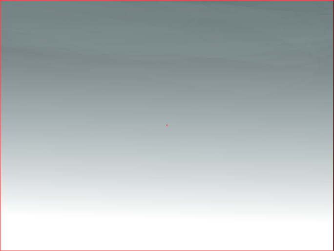
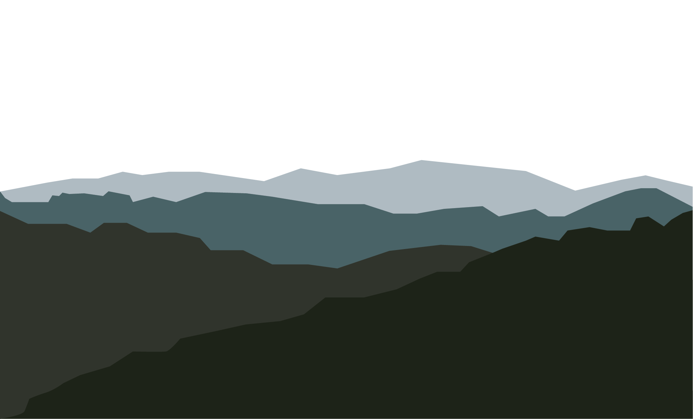
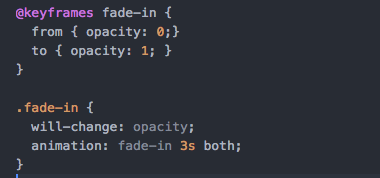
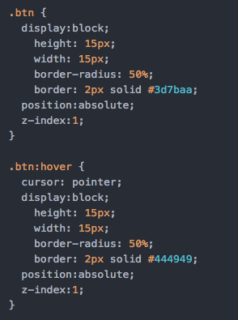
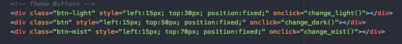
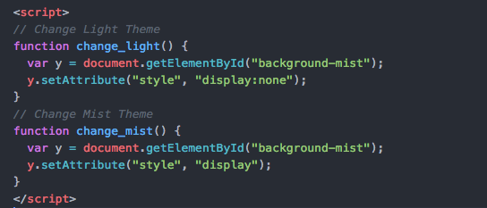

How to: Changing Themes
A brief explanation of how I implemented the various themes on the title page and how you can do it too.
- What you'll use:
- Adobe Illustrator
- Key Frames
- Reference Images (or just your imagination)
- Color Palettes
Step One: Choosing a Color Palette
The first and probably most important step is choosing the theme and color palette. If you don't know where to start but have a color in mind, you can use this color scheme generator.
This is the palette I made for the mist theme.
Step Two: Making your Designs
The next step is coming up with your design. I'll briefly go over how to make the graphics in Illustrator but if you have an image to use already, feel free to skip to the next step.
Step Two A: Background Gradient
Open Illustrator and create a nice big new file. The dimensions I used were 2048 x 1536 pixels.
- Press (M) or select the rectangle tool and create a rectangle to fill your whole image.
- Double-click the gradient tool and click on your gradient. Select the right slider and set the colors to RGB. 
- Change the colors of the selectors using your color palette to create the gradient you want. Feel free to drag the sliders or click anywhere on the bar to add more sliders. Once you've made a gradient you like, close the window then rotate and move the gradient into position. Feel free to add any effects or styling. In this I used a watercolor brush on very low opacity to give a subtle misty/cloud feeling to my gradient. 
- Export the file as a png into wherever you're storing your pictures for your site. Make sure to uncheck "Use Artboard".
Step Two B: Image
Next is creating your graphic. Create a new file of the same dimensions as your gradient. Feel free to do this in any way you'd like. Illustrator is a great tool to create vector images and there are tons of tutorials online you can use to make anything you can imagine.
For my graphics I used the Pen Tool to draw the hills and the Shape Builder Tool to fill in the colors using your color palette. Make sure to export when you're finished.
Step Three: The Code
CSS
You can make your own keyframes to change how the image will animate over time. To animate the background fade-in I did:
There are tons of buttons you can find online that are great to use. To make my buttons I did:
HTML
Place the images as the first line of your body tag in a div block and set the z-index to -1 and -2 in order to stack the images properly. Add your animations by adding the class you created and set the display of the div block to none like this:

Add your buttons and place them where you'd like. Add an onclick function call to the function we will write:
JS
I wrote a function in Javascript to hide and reveal the background like this:
You're Done!
Congratulations! You now have themed pages. By adding more buttons and designing more graphics, you can have more to select from as well. I hope you enjoyed this tutorial and learned something new. If you end up adding your own themes to your website or you just found this tutorial interesting, let me know! I'd love some feedback or suggestions as to what I can improve!